T子さん
迷った末の参加でしたが大正解でした。テクニカルやファンダメンタルを語る先生はたくさんいますが、こういう観点で相場を学べる幸運と、教えていただく岩本先生に感謝です。
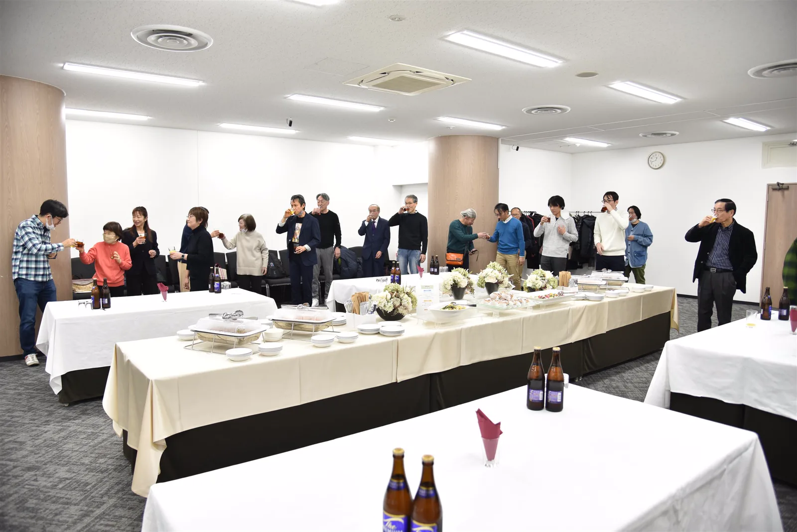
トレードLabで学んでいる会員の方の声をご紹介します。
 「大きく勝つより、まずは減らさない」投資初心者が少額トレードで目指す堅実なFXへの第一歩
投資初心者
「大きく勝つより、まずは減らさない」投資初心者が少額トレードで目指す堅実なFXへの第一歩
投資初心者
 FX初心者×歴10年 2人が感じた手応え
FX初心者／FX歴10年
FX初心者×歴10年 2人が感じた手応え
FX初心者／FX歴10年
 目標は住宅ローン完済！FXで再スタートを決意
FX経験者
目標は住宅ローン完済！FXで再スタートを決意
FX経験者
 FXで勝てなかった経験者が勝率約6割に！出来高を活用したトレードと的確なサポートで月単位の負けなしを実感
FX経験者
FXで勝てなかった経験者が勝率約6割に！出来高を活用したトレードと的確なサポートで月単位の負けなしを実感
FX経験者
 株よりFX、勘より岩本先生！勘だけのFXで大損失した受講生が学んだ「トレードのルール」と変わった投資への考え方
FX経験者
株よりFX、勘より岩本先生！勘だけのFXで大損失した受講生が学んだ「トレードのルール」と変わった投資への考え方
FX経験者
 FXが初めて楽しいと思えた！実践でも資金がプラスに
FX歴5〜6年
FXが初めて楽しいと思えた！実践でも資金がプラスに
FX歴5〜6年
 「全然当たらない」と思っていた サインの見方に新たな発見！
FX経験者
「全然当たらない」と思っていた サインの見方に新たな発見！
FX経験者
 FXは怖いと思っていたけれど…初心者でも安心できた理由
FX未経験から
FXは怖いと思っていたけれど…初心者でも安心できた理由
FX未経験から
 FX歴15年の経験者が入会を決めた2つの理由
FX歴15年
FX歴15年の経験者が入会を決めた2つの理由
FX歴15年
※個人の感想であり、成果を保証するものではありません。
T子さん
迷った末の参加でしたが大正解でした。テクニカルやファンダメンタルを語る先生はたくさんいますが、こういう観点で相場を学べる幸運と、教えていただく岩本先生に感謝です。
Y江さん
東京ロングのサインでは、目の前に昨日のPOCラインが控えていたので入れませんでした。結構上がっていったのですが、折り返しでとれば良いと思えたので、いつもと違って焦らずにいられました。これは収穫でした。
M川さん
カリキュラムを進める中でツールの使い方の理解が実戦で確認ができて、自分の理解の間違えに気づけたり、先生の目線を聞いた上で前より確信を持ってエントリーできるようになりました。
K介さん
11月の成績は、勝率58.30％、取引回数12回。先月より少し良くなりました。今月はサインが出てもエントリーに迷ってしまうことが多かった印象です。岩本先生の解説を聞くと、まだまだエントリーチャンスを逃しているなぁと思います。
S美さん
遅ればせながら11月の成績です。勝率66.60％、取引回数3回。指値で注文を出していたものの約定しないことが多く、取引回数が少なくなりました。12月はエントリー回数を増やせるように、浅めのエントリーを心がけます。
H田さん
今月のセミナーをやっと視聴できました。とてもシンプルな考えなのにこんなに勝てるのか、と驚いています。どちらも短期決戦なので、睡眠時間を削らずにすみそうです。
N代さん
12月の成績は、取引5回、勝率60.00％でした。前半は読みがハマっていましたが、調子に乗って根拠の薄いトレードになり、ロスカットされることがありました。今月は根拠を明確に持ってトレードすることを目標にします。
A男さん
RSIやダイバージェンスは、あまりピンと来なくて使っていませんでした。価格から計算した数字ではなく、出来高という別の実体のある数字との逆行は、ぜひ使いたいと思いました。
R子さん
昨日、初めてリアルセミナーに参加しました。掲示板で見かけて意味が分からず気になっていた言葉の説明があり、「あの時の……」と思いながら聞いていました。
O野さん
ようやくTradingViewの準備ができたところです。ここに至るまで、スタッフの方にかなりお手伝いしていただきました。先生が質問に必ず的確に返答されていて、ついて行って間違いないと思いました。
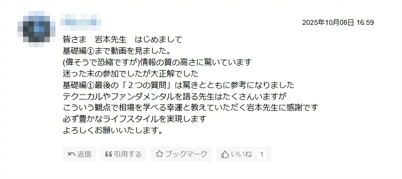
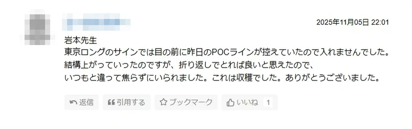
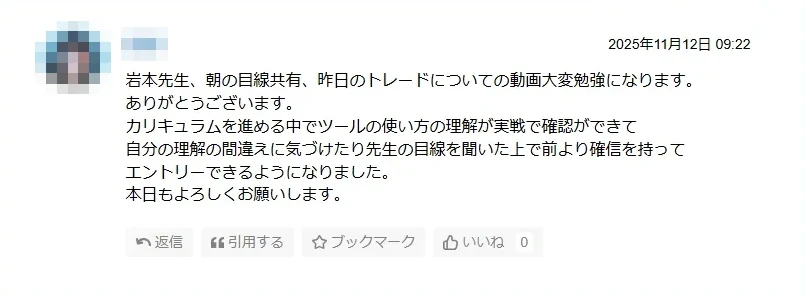
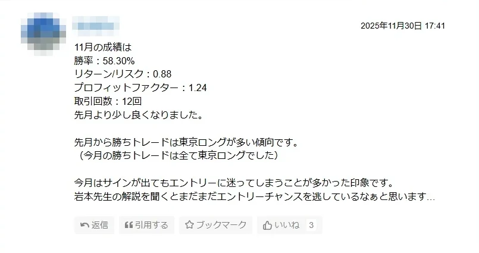
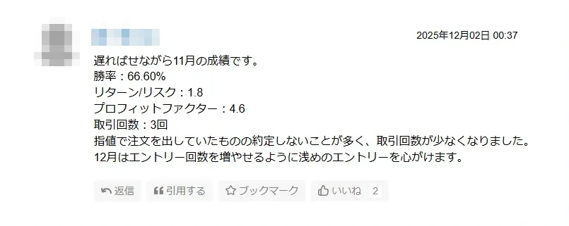
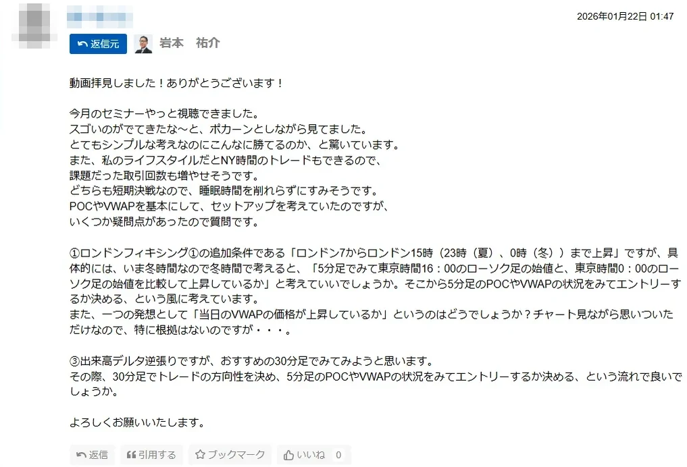
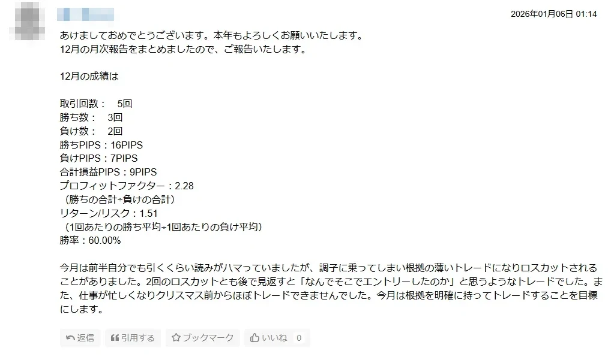
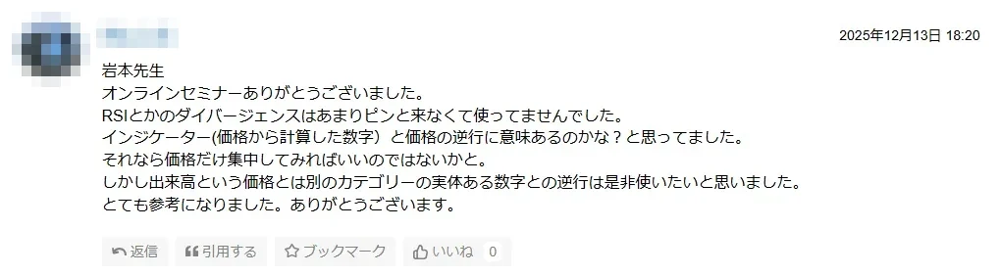
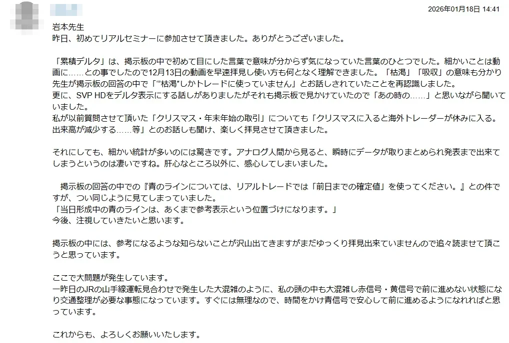
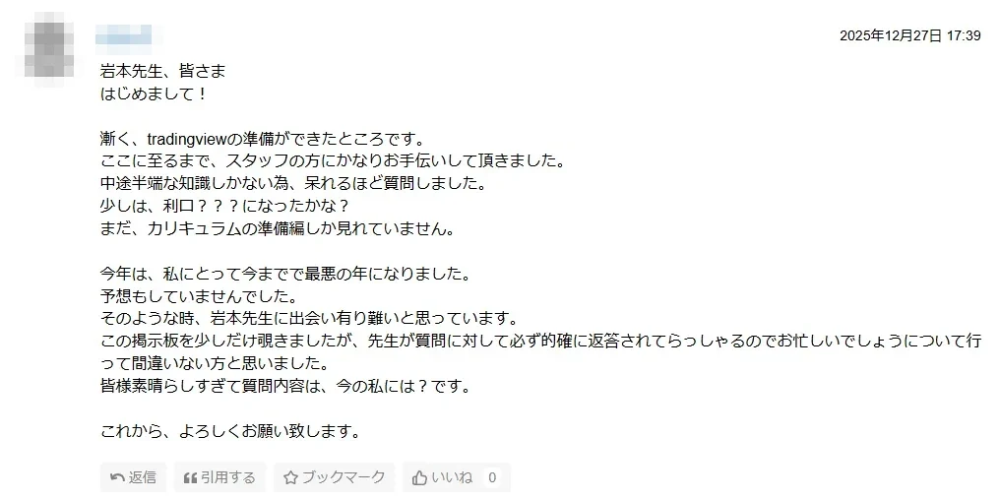
※会員ページの掲示板に寄せられた声の一部です。個人の感想であり、成果を保証するものではありません。

トレードLabで学ぶ「ネイキッドトレード」の考え方を、全4回の無料ビデオ講座「ディープインサイド」でお伝えしています。メールアドレスをご登録いただくと、すぐにご覧いただけます。
＼メール登録で特典プレゼント中／
無料ビデオ講座を受け取る